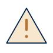

Onde os matemáticos leem, perguntam e publicam
Um guia prático dos sites, comunidades, bases de dados, revistas, sociedades
e ferramentas que matemáticos costumam usar e acompanhar: o que é cada um,
se precisa de login e como participar.
1. Como funcionam os logins
Nem todo site exige conta. Há quatro tipos de acesso, indicados nas tabelas
com estes símbolos:
| Símbolo |
Tipo de acesso |
O que fazer |
|
Livre, sem login |
É só abrir o site. |
|
Conta pessoal gratuita |
Crie uma conta, de preferência com o e-mail institucional: muitos sites usam o domínio da universidade para confirmar o vínculo com a pesquisa. |
|
Acesso pela instituição |
O site é pago, mas a universidade assina. O acesso é feito pela rede da universidade ou pelo login institucional; no Brasil, pelo Portal de Periódicos CAPES com o login CAFe (veja a seção 14). |
|
Pago |
Anuidade de sócio ou assinatura. Quase sempre há desconto para estudantes. |
Dica: use um gerenciador de senhas (o do próprio navegador já serve) e
anote em um só lugar os seus identificadores: ORCID, Google Scholar,
Scopus, MathSciNet etc.
2. Por onde começar: um checklist
Uma ordem sugerida, da mais importante para a mais opcional:
- ORCID: criar o identificador permanente de pesquisador.
- Acesso institucional: testar o acesso às bases pagas de fora do campus.
- Google Scholar: criar o perfil e ativar alertas.
- arXiv: criar a conta e assinar a lista diária das categorias de interesse.
- zbMATH Open e MathSciNet: conferir se já existe um perfil de autor.
- MathOverflow e Math.SE: criar a conta do Stack Exchange.
- Alertas de revistas: escolher três ou quatro revistas da área de pesquisa.
- ResearchGate: criar perfil (opcional).
- Sociedades: avaliar se vale associar-se (descontos em eventos e livros).
3. Identidade acadêmica
São os perfis que identificam um pesquisador e reúnem a sua produção.
| Site |
O que é |
Acesso |
Como participar |
| ORCID |
Identificador único e permanente de pesquisador (um número como 0000-0002-…). Evita confusão entre nomes parecidos e é pedido por revistas na submissão de artigos e por agências de fomento. |
|
Crie a conta em Register, preencha formação e vínculo, e autorize a ligação com Scopus, Web of Science e outros sistemas, para as publicações entrarem automaticamente. |
| Google Scholar |
Busca de artigos e perfis de pesquisadores com contagem de citações. |
|
Em Meu perfil, crie o perfil com uma conta Google, confirme o e-mail institucional e adicione as publicações. Os alertas (ícone de envelope) enviam por e-mail novos artigos de um tema ou de um autor. |
| ResearchGate |
Rede social acadêmica: perfil, publicações, seguidores e uma seção de perguntas. |
|
Cadastro com e-mail institucional. Permite seguir pesquisadores e compartilhar versões de artigos, quando a revista permite. |
| Academia.edu |
Semelhante ao ResearchGate, mais usado em humanidades. |
|
Opcional. |
| Web of Science Researcher Profiles |
Perfil de autor na base Web of Science (Clarivate). Substituiu o antigo Publons e também registra pareceres feitos para revistas. |
+ |
O perfil é gratuito; a busca completa na base exige acesso institucional. |
| Scopus Author ID |
Identificador de autor na base Scopus (Elsevier), criado automaticamente a partir da primeira publicação indexada. |
|
Não é preciso criar: depois do primeiro artigo, basta procurar o próprio nome, conferir os dados e ligar o perfil ao ORCID. |
| Mathematics Genealogy Project |
A "árvore genealógica" da matemática: quem orientou quem, desde séculos atrás. |
|
Depois da defesa do doutorado, os dados podem ser enviados pelo formulário do site. |
4. Bases de dados e busca de artigos
| Site |
O que é |
Acesso |
Como usar |
| arXiv (math) |
Repositório de preprints: quase todo artigo de matemática aparece aqui antes (ou além) da revista. As categorias seguem a classificação de áreas; por exemplo, math.AP (análise de EDPs), math.DS (sistemas dinâmicos) e math.FA (análise funcional). |
para ler · para publicar |
Ler é livre. Para receber os novos artigos por e-mail todo dia, assine a lista em Help → Subscribe. Para publicar, é preciso uma conta; quem envia pela primeira vez em uma categoria pode precisar de um endorsement (aval) de alguém que já publica nela. |
| MathSciNet |
A base da American Mathematical Society: resenhas de quase todos os artigos de matemática, com perfis de autores e citações. |
/ |
Pela rede da universidade. A busca por autor mostra o MR Author ID. |
| zbMATH Open |
A base europeia equivalente ao MathSciNet, gratuita desde 2021. Permite buscar por fórmulas e pela classificação MSC. |
|
Não precisa de conta. Erros no perfil de autor podem ser corrigidos por um formulário. |
| Web of Science |
Base multidisciplinar com índices de citação e fator de impacto das revistas. |
|
Útil para saber quem citou um artigo. |
| Scopus |
Base multidisciplinar da Elsevier, com métricas de revistas e autores. |
|
Também mostra citações e perfis de autores. |
| OEIS |
Enciclopédia online de sequências de inteiros. |
· para contribuir |
Digite os primeiros termos de uma sequência e descubra o que ela é. |
| nLab |
Wiki de matemática avançada (categorias, topologia, física matemática). |
|
Leitura livre. |

Revistas predatórias: desconfie de revistas fora das bases acima e de
convites por e-mail para publicar "rapidamente" mediante pagamento.
5. Perguntas, respostas e discussão
| Site |
O que é |
Acesso |
Como participar |
| Mathematics Stack Exchange |
Perguntas e respostas de matemática de qualquer nível. |
para ler · para participar |
Siga tags de interesse e responda perguntas: é a melhor forma de ganhar pontos (que liberam privilégios) e de praticar a escrita matemática. |
| MathOverflow |
Perguntas de nível de pesquisa, respondidas por muitos matemáticos conhecidos. |
|
Usa a mesma conta do Stack Exchange. Antes de perguntar, vale ler How to ask: a pergunta deve ser precisa, com contexto e referências. |
| Lean Zulip |
Chat da comunidade de formalização de provas em Lean. |
|
Crie a conta e entre no canal #new members. |
6. Blogs de matemáticos
Todos podem ser lidos livremente. Para acompanhar, use "Follow" (WordPress),
a assinatura por e-mail ou um leitor de RSS.
| Blog |
Autor |
Por que acompanhar |
| What's new |
Terence Tao (Medalha Fields) |
Análise, EDP, Navier–Stokes e excelentes textos de orientação para estudantes e jovens pesquisadores. |
| Gowers's Weblog |
Tim Gowers (Medalha Fields) |
Combinatória, análise e reflexões sobre a vida acadêmica. |
| Combinatorics and more |
Gil Kalai |
Combinatória e notícias da comunidade. |
| The n-Category Café |
Vários autores |
Teoria de categorias e física matemática. |
7. Divulgação e história
| Site |
O que é |
Acesso |
Como acompanhar |
| Quanta Magazine |
Referência mundial em jornalismo de matemática e ciência. |
|
Assine a newsletter gratuita. |
| MacTutor |
História da matemática e biografias de matemáticos. |
|
Leitura livre. |
| 3Blue1Brown |
Vídeos com animações que explicam ideias matemáticas. |
|
Inscreva-se no YouTube. |
| Numberphile |
Vídeos curtos com matemáticos explicando temas curiosos. |
|
Inscreva-se no YouTube. |
8. Revistas
Como acompanhar uma revista: no site da revista, procure "Sign up for
alerts", "Table of contents alerts" ou "RSS" para receber por e-mail o
sumário de cada número novo. Normalmente pede uma conta gratuita na editora
(Springer, Elsevier, Wiley…). O texto completo dos artigos costuma exigir
acesso institucional .
Gerais e de maior prestígio
| Revista |
Editora |
| Annals of Mathematics |
Princeton University / IAS |
| Acta Mathematica |
Institut Mittag-Leffler |
| Inventiones Mathematicae |
Springer |
| Journal of the American Mathematical Society (JAMS) |
AMS |
| Publications Mathématiques de l'IHÉS |
Springer / IHÉS |
Análise, EDP e sistemas dinâmicos
| Revista |
Editora |
| Communications on Pure and Applied Mathematics |
Wiley |
| Archive for Rational Mechanics and Analysis |
Springer |
| Analysis & PDE |
MSP |
| Journal of Differential Equations |
Elsevier |
| Journal of Functional Analysis |
Elsevier |
| SIAM Journal on Mathematical Analysis |
SIAM |
| Journal of Mathematical Fluid Mechanics |
Springer |
| Discrete and Continuous Dynamical Systems |
AIMS |
| Evolution Equations and Control Theory |
AIMS |
| Applicable Analysis |
Taylor & Francis |
Notícias da comunidade
9. Sociedades, institutos e prêmios
| Instituição |
O que é |
Como participar |
| AMS — American Mathematical Society |
A maior sociedade matemática do mundo. |
Associação com desconto para estudantes; muito conteúdo é gratuito. |
| SIAM — Society for Industrial and Applied Mathematics |
Matemática aplicada, EDP e computação científica. |
Anuidade com desconto para estudantes. |
| EMS — European Mathematical Society |
A sociedade matemática europeia. |
Opcional. |
| IMU — International Mathematical Union |
Organiza o ICM, o Congresso Internacional de Matemáticos (a cada quatro anos), onde se entrega a Medalha Fields. |
As palestras do ICM ficam disponíveis em vídeo. |
| Prêmio Abel |
Um dos prêmios mais importantes da matemática, anual. |
Anúncios e palestras dos premiados. |
As sociedades e institutos brasileiros estão na seção 14.
10. Palestras, escolas e eventos
| Lugar |
O que oferece |
Acesso |
| IAS — Institute for Advanced Study |
Palestras e seminários gravados. |
|
| IHÉS |
Palestras e cursos do instituto francês no YouTube. |
|
| SLMath (antigo MSRI) |
Vídeos de workshops; escolas de verão por inscrição. |
/ inscrição |
| ICTP — Trieste, Itália |
Escolas e workshops internacionais, muitas vezes com apoio financeiro para pesquisadores de países em desenvolvimento. |
Inscrição em cada atividade |
| Mathematics Calendar (AMS) |
Calendário mundial de conferências de matemática. |
|
11. Redes sociais de matemáticos
| Rede |
O que é |
Como participar |
| Mathstodon |
Uma comunidade do Mastodon feita para matemáticos, com suporte a fórmulas em LaTeX. Vários matemáticos conhecidos, como Terence Tao, publicam lá. |
Crie a conta e siga pesquisadores de interesse. |
12. Ferramentas
| Ferramenta |
Para que serve |
Acesso |
| Overleaf |
Escrever LaTeX online, com colaboração e ligação com o GitHub. |
|
| GitHub |
Versionar textos e códigos, publicar sites e gerar PDFs automaticamente. |
|
| Zotero |
Organizar referências e gerar bibliografias em BibTeX. |
/ para sincronizar |
| SymPy e SageMath |
Computação simbólica em Python, para conferir contas. |
|
| Lean e mathlib |
Provas verificadas por computador, um tema em alta. |
|
| Detexify |
Desenhe um símbolo e descubra o comando LaTeX dele. |
|
13. Comunidades do Stack Exchange
Todas usam a mesma conta: depois de criar uma, basta clicar em Join em
cada comunidade.
| Para… |
Comunidades |
| Pesquisa e vida acadêmica |
Mathematics · MathOverflow · Academia · Computational Science · History of Science and Mathematics · TeX – LaTeX |
| Idiomas |
Chinese Language · Italian Language · Portuguese Language · Language Learning |
| Ciências e cultura |
Biology · Astronomy · Space Exploration · Literature · Music: Practice & Theory · Medical Sciences |
| Sites e GitHub |
Stack Overflow (tags html, css, github-pages, github-actions) |
14. Para quem pesquisa no Brasil
| Site |
O que é |
Acesso |
Como participar |
| Portal de Periódicos CAPES |
A porta de entrada para revistas e bases pagas (Web of Science, Scopus, MathSciNet e outras), assinadas pelo governo para as universidades. |
|
Clique em Acesso CAFe, escolha a universidade e entre com o login institucional. Funciona também fora do campus. |
| Plataforma Lattes (CNPq) |
O currículo oficial da pesquisa no Brasil, exigido na pós-graduação e em editais. |
|
Mantenha atualizado e informe o ORCID no campo próprio. |
| Qualis CAPES / Plataforma Sucupira |
A classificação brasileira das revistas (A1, A2, …), usada na avaliação da pós-graduação. |
|
Consulte antes de escolher onde publicar. |
| IMPA — Instituto de Matemática Pura e Aplicada |
O principal instituto de pesquisa em matemática do país. |
|
Cursos de verão, eventos e muitas aulas no YouTube; sede do Colóquio Brasileiro de Matemática. |
| SBM — Sociedade Brasileira de Matemática |
A sociedade brasileira de matemática. |
|
Sócios têm desconto em eventos e livros. |
| SBMAC — Sociedade Brasileira de Matemática Aplicada e Computacional |
Organiza o CNMAC, o congresso anual de matemática aplicada. |
|
Anuidade com desconto para estudantes. |
| CAPES e CNPq |
As agências federais de fomento (bolsas e editais). |
|
Cadastro pelo Lattes e pelos sistemas de cada edital. |